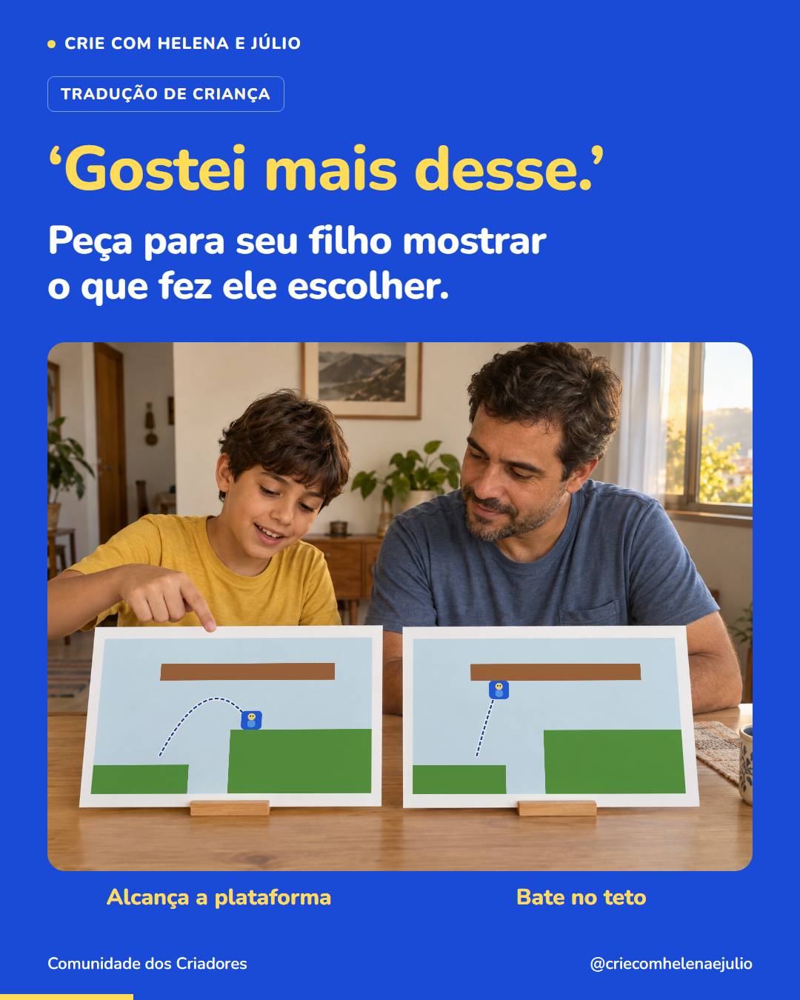

P38 · ‘Gostei mais desse.’ Peça para seu filho mostrar o que fez ele escolher.
Imagem única · 1080 × 1350 · Tradução de criança · Terceira publicação da semana 7


Legenda completa
Comparar duas versões ajuda a conversar sobre uma escolha. Ao criar um jogo, seu filho pode testar um salto curto e outro mais alto no mesmo lugar. Num deles, o personagem alcança a plataforma. No outro, bate no teto. Agora ele tem algo concreto para observar e explicar quando escolher a versão que prefere. Você pode perguntar: ‘O que mudou de uma para a outra?’ e deixar ele mostrar. Em outras escolhas, como a cor de um personagem, a resposta pode ser só uma preferência. Também vale ouvi-la. Siga o perfil para conhecer mais decisões que uma criança pode tomar criando jogos.